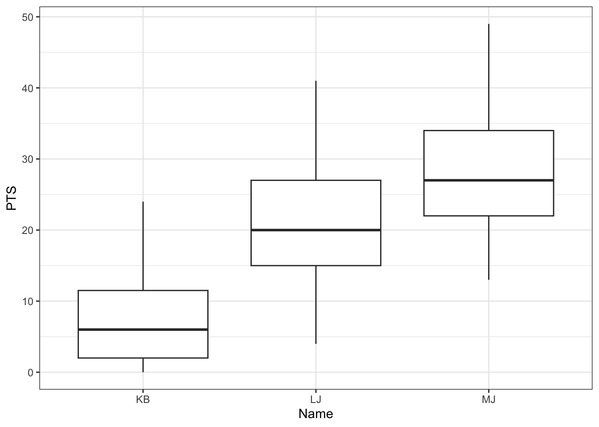
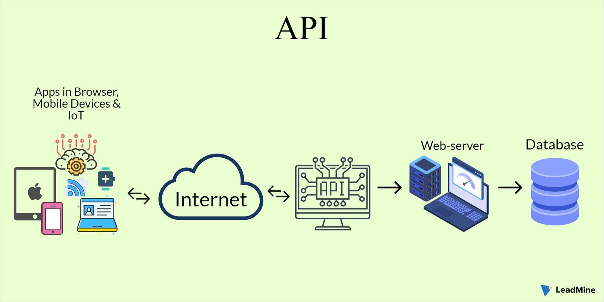
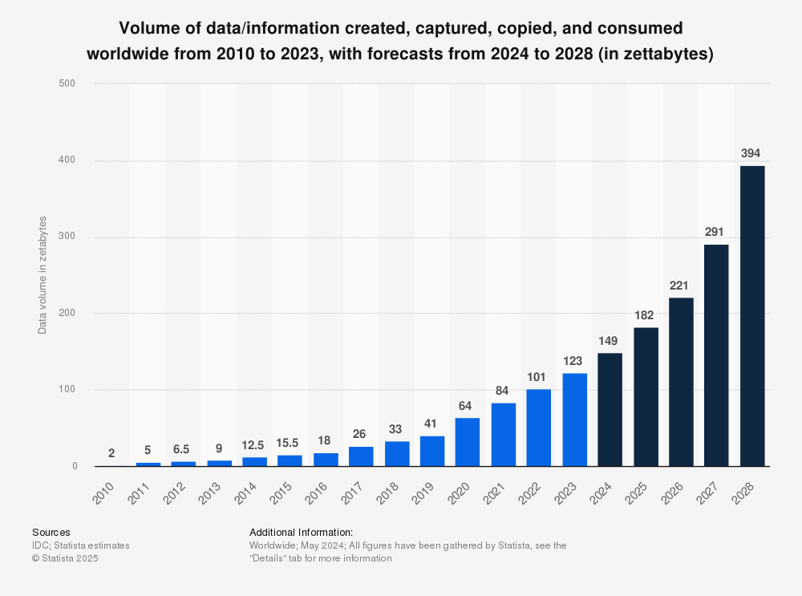
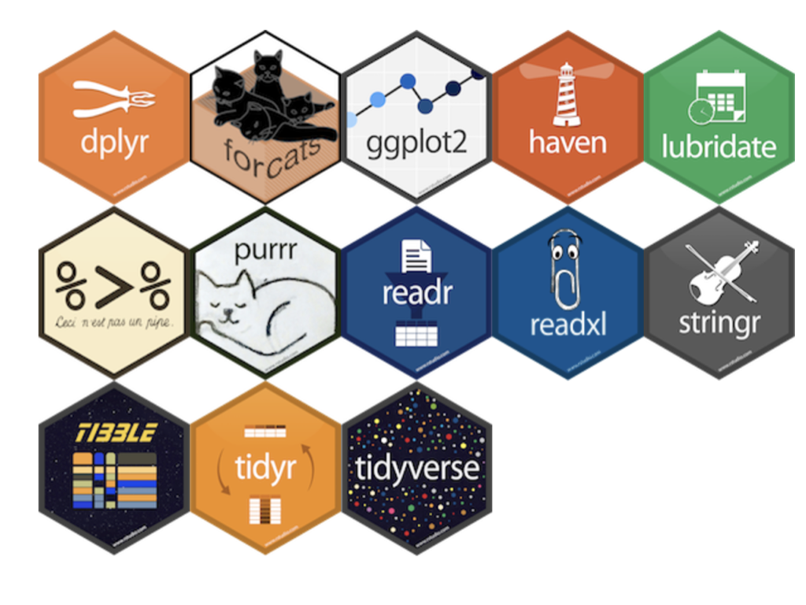

library(readxl) ## Data Extraction --- E
library(dplyr) ## Data Transformation --- T
library(ggplot2) ## Data Visualization --- VSession 1: Introduction To Extraction Workshop - HTML & APIs
Session 1: Introduction to Data Extraction
0. Logisitcs
- COurseKata
1. Goals & Objectives (Presentation)
- Understand the importance of extracting dynamic data (via HTML and APIs) in modern data analysis and teaching
- Learn how to access and work with APIs to retrieve structured, real-time data
- Learn how to bring HTML-based data (e.g., web tables) into R using scraping tools
- Apply these skills through hands-on coding practice and discussion of classroom integration
Goals for Introduction
(need to place)
2. Conceptual Foundation
P1. My mentor, Allan, says ask good questions…
P2. Statistical Question: Who had the most impactful first season in terms of points: Michael Jordan, LeBron James, or Kobe Bryant?
P3. I recently submitted a manuscript on this exact dataset, so let’s use it as our starting point.
P4. We’ll begin by working with a static Excel file that contains per-game stats for each player’s 15 seasons in the NBA.
P5. Let’s Load the pertinent libraries
T1. ____ Fill in the code (chatgpt)
P6. Load in the data
T2. ____ Fill in the code (chatgpt)
nba_df <- read_xlsx("nba_data.xlsx", sheet = "modern_nba_legends_08302019")P7. Let’s view the data …
T3. Use the
glimpsefunction to view the data
glimpse(nba_df)Rows: 3,400
Columns: 38
$ Name <chr> "MJ", "MJ", "MJ", "MJ", "MJ", "MJ", "MJ", "MJ", "MJ", "M…
$ Season <chr> "season_1", "season_1", "season_1", "season_1", "season_…
$ Game_Location <chr> "Home", "Away", "Home", "Away", "Away", "Away", "Away", …
$ Game_Outcome <chr> "W", "L", "W", "W", "L", "W", "W", "W", "W", "L", "L", "…
$ Point_Margin <dbl> 16, -2, 6, 5, -16, 4, 15, 2, 3, -20, -9, -17, -10, 19, -…
$ Rk <dbl> 1, 2, 3, 4, 5, 6, 7, 8, 9, 10, 11, 12, 13, 14, 15, 16, 1…
$ G <dbl> 1, 2, 3, 4, 5, 6, 7, 8, 9, 10, 11, 12, 13, 14, 15, 16, 1…
$ Date <dttm> 1984-10-26, 1984-10-27, 1984-10-29, 1984-10-30, 1984-11…
$ Age <chr> "21-252", "21-253", "21-255", "21-256", "21-258", "21-26…
$ Tm <chr> "CHI", "CHI", "CHI", "CHI", "CHI", "CHI", "CHI", "CHI", …
$ Opp <chr> "WSB", "MIL", "MIL", "KCK", "DEN", "DET", "NYK", "IND", …
$ GS <dbl> 1, 1, 1, 1, 1, 1, 1, 1, 1, 1, 1, 1, 1, 1, 1, 1, 1, 1, 1,…
$ MP <dbl> 40, 34, 34, 36, 33, 27, 33, 42, 43, 33, 44, 39, 42, 30, …
$ FG <dbl> 5, 8, 13, 8, 7, 9, 15, 9, 18, 12, 4, 11, 11, 9, 10, 6, 9…
$ FGA <dbl> 16, 13, 24, 21, 15, 19, 22, 22, 27, 24, 17, 26, 22, 13, …
$ FG_Percent <dbl> 0.313, 0.615, 0.542, 0.381, 0.467, 0.474, 0.682, 0.409, …
$ `3P` <dbl> 0, 0, 0, 0, 0, 0, 0, 0, 1, 0, 0, 0, 0, 0, 0, 0, 1, 0, 0,…
$ `3PA` <dbl> 0, 0, 0, 0, 0, 0, 0, 0, 1, 1, 0, 3, 0, 0, 1, 0, 1, 0, 0,…
$ `3P_Percent` <dbl> NA, NA, NA, NA, NA, NA, NA, NA, 1, 0, NA, 0, NA, NA, 0, …
$ FT <dbl> 6, 5, 11, 9, 3, 7, 3, 9, 8, 3, 8, 12, 13, 5, 10, 1, 3, 2…
$ FTA <dbl> 7, 5, 13, 9, 4, 9, 4, 12, 11, 3, 8, 16, 14, 6, 10, 1, 4,…
$ FT_Percent <dbl> 0.857, 1.000, 0.846, 1.000, 0.750, 0.778, 0.750, 0.750, …
$ ORB <dbl> 1, 3, 2, 2, 3, 1, 4, 2, 2, 0, 0, 2, 4, 0, 3, 0, 1, 2, 2,…
$ DRB <dbl> 5, 2, 2, 2, 2, 3, 4, 7, 8, 2, 5, 3, 9, 4, 3, 2, 2, 3, 0,…
$ TRB <dbl> 6, 5, 4, 4, 5, 4, 8, 9, 10, 2, 5, 5, 13, 4, 6, 2, 3, 5, …
$ AST <dbl> 7, 5, 5, 5, 5, 3, 5, 4, 4, 2, 7, 2, 2, 3, 8, 3, 2, 5, 3,…
$ STL <dbl> 2, 2, 6, 3, 1, 3, 3, 2, 3, 2, 5, 2, 2, 4, 3, 3, 2, 3, 1,…
$ BLK <dbl> 4, 1, 2, 1, 1, 1, 2, 5, 2, 1, 2, 1, 2, 1, 1, 2, 0, 0, 1,…
$ TOV <dbl> 5, 3, 3, 6, 2, 5, 5, 3, 4, 1, 4, 3, 6, 4, 4, 4, 2, 4, 4,…
$ PF <dbl> 2, 4, 4, 5, 4, 5, 2, 4, 4, 4, 5, 3, 3, 4, 4, 1, 5, 4, 3,…
$ PTS <dbl> 16, 21, 37, 25, 17, 25, 33, 27, 45, 27, 16, 34, 35, 23, …
$ GmSc <dbl> 12.5, 19.4, 32.9, 14.7, 13.2, 14.9, 29.3, 21.2, 37.5, 17…
$ number_game <dbl> 1, 2, 3, 4, 5, 6, 7, 8, 9, 10, 11, 12, 13, 14, 15, 16, 1…
$ DD <dbl> 0, 0, 0, 0, 0, 0, 0, 0, 1, 0, 0, 0, 1, 0, 0, 0, 0, 0, 0,…
$ TD <dbl> 0, 0, 0, 0, 0, 0, 0, 0, 0, 0, 0, 0, 0, 0, 0, 0, 0, 0, 0,…
$ Age_Years <dbl> 21, 21, 21, 21, 21, 21, 21, 21, 21, 21, 21, 21, 21, 21, …
$ Age_Days <dbl> 252, 253, 255, 256, 258, 264, 265, 267, 270, 272, 274, 2…
$ Last_Name <chr> "Jordan", "Jordan", "Jordan", "Jordan", "Jordan", "Jorda…Q1. Look through the data, does it look clean? Discuss amongst Your peers. (chatgpt)
Ans Q1: It is clean the numeric variables are supposed to be numeric and the characrets variables are treated as char (chatgpt)
P8. Now let’s clean the focus on the data frame that we are after
T4. ____ Fill in the code (chatgpt)
season_1_df <- nba_df %>%
filter(Season == "season_1")- P9. Now lets look at a plot of their points (chatgpt)
T5. ____ Fill in the code (chatgpt)
season_1_df %>%
ggplot(aes(x = Name, y = PTS)) +
geom_boxplot() +
theme_bw() Warning: Removed 14 rows containing non-finite outside the scale range
(`stat_boxplot()`).
Note 1: We could have spruced it up but here we just wanted to answer the question, if you have the urge please do so.
Q2. What conclusion could be made (chatgpt)
P10. Now what about, Magic Johnson or Wilt Chamberlain Maybe Luka Dončić or Ja Morant If I wanted to add this data I need to go to the originnal source not an excel sheet to do this (chatgpt)
Note 2: - Shift students from being passive data users to active data seekers - Move beyond the idea of “waiting for clean data” to learning how to access, validate, and clean it themselves - Teach both the skill to extract and the capacity to teach extraction
Note 3: - Why this matters: We as instructors should not just rely on pre-built packages or static datasets. The digital world changes constantly — websites, APIs, and file structures evolve.
Our responsibility: Teach students (and ourselves) how to adapt and access real-world data sources. Equip learners with skills to extract, not just consume pre-extracted content.
Key idea: Flat files can still be dynamic depending on how they’re maintained — but we use the term “dynamic” here to emphasize external, real-time data access through APIs and web scraping.
A. Static Files or Sources Extraction
P11.
Examples: CSV, Excel files
Typically unchanging unless manually edited
Often pre-loaded into classroom activities
May still require cleaning (e.g., column names, missing data)
Note 4: Messy data is not always a bad thing
B. Dynamic Sources Extraction
P12.
Definition: Data sources that update over time or are externally controlled (i.e., you don’t own the source)
P13.
Two primary types:
- APIs – Designed to serve structured data upon request (e.g., player stats, weather)
- HTML/Web Pages – Seen as dynamic when content changes (especially sports, news, etc.)
Self Question 1: what other type are there, why do we not need them here?
- Note 5: HTML can be treated as static or dynamic depending on how frequently the page updates. For this workshop, we treat HTML as dynamic, especially for sports data.
| ## OLD BELOW |
| #### 2.a. HTML and APIs in the Classroom |
| The availability of continuously changing data and the use of web APIs have grown exponentially in recent years. Dynamic data is published online in formats designed for both human readability (HTML) and machine access (APIs). However, this not always reflected in introductory statistics or data science classes. Many times, instruction relies on pre-cleaned, static datasets, which are not realistic to the current data landscape. |
| To bridge this gap, it is essential that we prepare students to meet real-world data challenges by equipping them with the skills to independently extract, process, and analyze data. While it is often sufficient to provide static datasets for demonstrations and exercises, careers in modern data science will demand the ability to find and retrieve data from live sources, not simply rely on what’s been prepackaged. |
| #### 2.b. Web APIs |
|  |
| APIs (Application Programming Interfaces) allow programs to request data directly from external servers in a structured format (most often JSON). Learning to work with web APIs teaches students not just to observe data, but to understand how to: |
| - Locate relevant APIs (e.g., weather data from OpenWeatherMap) |
| - Construct their own API requests (instead of relying on pre-built packages) |
| - Interpret the response structure (e.g., nested JSON) |
| - Transform the returned data into usable formats for analysis |
| This pushes students to explore data fully, recognize potential limitations, biases, or technical issues in the data structure, and move beyond canned examples. |
| Furthermore, as APIs often serve as the channel which to access and retrieve information from databases. In an evolving landscape where more and more data is created and captured with each passing day, being able to leverage the information stored in databases is more critical than ever. |
|  |
| The use of APIs requires keys, which are unique and secret codes that are used to authorize your request and identify your user and billing information. Consequently, keeping these codes secret is imperative. To do so, store API keys in environment files which reside on your computer, and not coded into variables or available in plain text on your working files. |
2.c. HTML Web Scraping

Much like APIs, lots of relevant and useful information is available directly on webpages, which are readable by humans rather than APIs which are designed for machine access. By learning this skill, students are able to:
Locate relevant sources (e.g., sports data from Pro Football Reference)
Understand how websites deliver and organize content
Transform and clean data for analysis and visualization
Often times, HTML tables contain unexpected structures or data types (images, links, etc) and can present a challenge that develops not only data cleaning skills, but intention, planning, and adaptability when handling and analyzing difficult data.
2.d. Our Focus: Extraction
While analyzing data is comprised of many steps and processes, one of the first and most foundational of these is extracting the data. Here are some common ways data can be extracted. In this workshop, the focus will be on the last two methods.
CSV (comma-seperated values) files
read.csvreadr::read_csv
Excel files (.xlsx, .xlsb, .xlsm, .xls)
readxl::read_excel- Not .xlsb
readxlsb::read_xlsbtidyxl::xlsx_cells
Pre-loaded data frames in R (mtcars)
data()
URLs to GitHub repositories
readr::read_csv("link")
HTML (Web Extraction/Scraping)
rvest::read_html
API requests (Databases)
httr2
2.e. Workshop Agenda
Session 1: Introduction
This session serves as a discussion of the principles and reasoning behind learning these concepts and how they can benefit the classroom.
Session 2: Getting Weather Data via OpenWeather API
In this session, we dive into OpenWeather API and learn to use packages like httr2 to execute API calls. We will also discuss URLs, queries, data structures, and more.
Session 3: Scraping NFL Sports Data
In this session, we will use Pro-Football Reference to learn how to extract and clean HTML table data for use in statistical analysis and visualizations.
Session 4: Putting it All Together (Project)
In this project, we will use HTML scraping joined with the OpenWeather API to create our own cloropleth map of Iowa.

(need to delete, place somewhere) Introduction to Libraries & Glossary
This project, when possible, utilizes tidyverse packages. tidyverse is a collection of open-source packages that are well-integrated to tackle problems of data extraction, manipulation, transformation, exploration, and visualization.

library(rvest) # Web scraping
library(dplyr) # Data manipulation
library(stringr) # String cleaning
library(rlang) # Advanced evaluation
library(purrr) # Functional tools
library(ggplot2) # Visualizations
library(httr2) # Makes web requests
library(tibble) # Easier and prettier data frames
library(lubridate) # Handles dates
library(dotenv) # Loads environment variables from .Renviron
library(glue) # Easier string concatenation
library(tigris) # U.S. shapefiles for mappingThis is a list of R packages used in this project, accompanied by brief descriptions of what they do.
rvest
- Used for web scraping: parses HTML/XML documents into a navigable format.
- Extracts structured data using CSS selectors, XPath, or tag-based search (
html_table(),html_text(), etc.).
dplyr
- Core package for tidyverse-style data manipulation (
filter(),mutate(),select(), etc.). - Supports chaining operations with
%>%/ |>, making data workflows readable and efficient.
stringr
- Provides a consistent set of functions for string manipulation.
- Handles pattern matching, replacement, splitting, and formatting.
rlang
- Supports advanced evaluation and programming with tidyverse tools.
- Useful when writing custom functions that dynamically reference or modify variables.
purrr
- Enables functional programming with mapping tools like
map(),map_df(),walk(), etc. - Replaces (many) for-loops and supports clean iteration over lists and vectors.
ggplot2
- Graphics package for building layered, flexible visualizations.
- Supports various plot types, themes, scales, and faceting for data storytelling.
httr2
- Modern HTTP client designed for tidyverse-like API interaction.
- Replaces
httrwith a more intuitive and pipeable interface (request() |> req_perform()).
tibble
- A modern rethinking of the
data.framethat prints cleaner and behaves more predictably. - Default in tidyverse workflows; avoids surprises like string-to-factor conversion.
lubridate
- Simplifies working with dates and times: parsing, formatting, and arithmetic.
- Makes it easy to extract components (e.g., month, weekday) and perform date math.
dotenv
- Loads environment variables from a
.envor.Renvironfile into R. - Keeps sensitive data like API keys out of your scripts and version control.
glue
- Provides string interpolation (e.g.,
glue("Hello {name}")). - Cleaner and safer than
paste()for building URLs, messages, or SQL queries.
tigris
- Downloads shapefiles and geographic boundary data (e.g., counties, states) from the U.S. Census Bureau.
- Returns spatial
sfdata frames, making it easy to map and visualize geographic data.
3. Hands-On Coding Activity
Extracting from accessible sources such as:
- A static
.csvhosted online (warm-up) - A Wikipedia table using
rvestandjanitor
- A static
Introduce
read_csv()andrvest::html_table()Add cleaning steps to enforce tidy principles (snake_case, correct types)
4. Reflection
- How can you introduce real-world messiness without overwhelming students?
- How would you scaffold tidy principles at the intro-level?
5. Misc. Questions/Ideas
- Set expectations and workshop goals
- Why data extraction matters: relevance to real-world education
- Overview of the layout / table of contents
- Discuss libraries used (tidyverse, rvest, httr, etc.)
- Best practices (e.g., avoiding hardcoding, consistent comments)
- Adapting to changing APIs/websites
- Anecdote: Spotify example of lost API access
- Explain tidy data: snake_case column names, correct data types
- Emphasize code flexibility — developers can change APIs overnight
- Activity: Scaffolding + Code review using example(s)